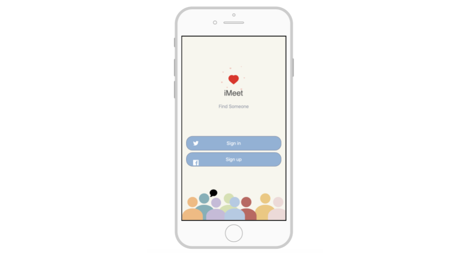

Problem Statement: Lonely People

Our users are finding it increasingly difficult to establish a real connection with another person. They find it difficult to find the “one” for them as many of these people have a hard time finding others with similar interests and goals. Our solution would make it so people can be matched based on similar interests that they communicate, goals they would like to achieve, to help make it easier to help find that special someone who's right for you.
My Group and I worked together to brainstorm some possible resources, factors, possible problems we would encounter, when trying to bring together and establish a connection between Lonely People.
A persona of a person who is looking for a relationship, online.
A comic strip illustrating the desire for an app that connects and brings people together.
A sketch of potential app solutions for Lonely People.
A prototype of iMeet.
A usabilitty script of iMeet.
A Low-Fi Prototype for iMeet.
A Hi-Fi Prototype for our application, iMeet, where you can meet others online!
A Final Presentation of our iMeet app, where you can meet and chat with others!
Affinity Diagram: Lonely People
Persona: Jake Graham
Storyboard: Jake Graham
Sketch: iMatch Lonely People

Prototyping: Protoype of iMeet
Scenario Script: iMeet
Low-Fi Prototype: iMeet Application
Hi-Fi Prototype: iMeet Application

Final Presentation: iMeet Application